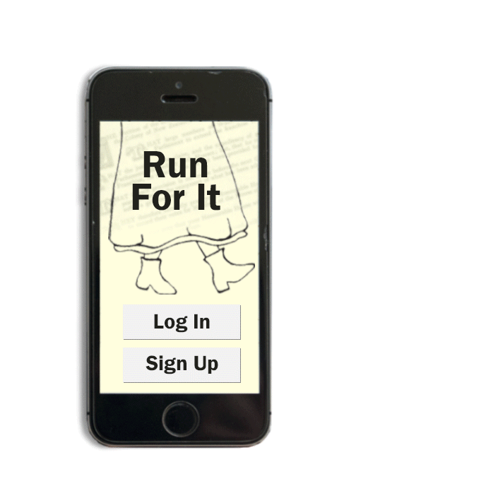

What's it about?
Run For It is an application intended for mobile
devices which encourages the user to be active in order to access information on the New Zealand Woman's Suffrage. For every 270 metres the user walks they will unlock information about key women in the movement as a reward.
This application aims to draw more attention to the importance of the Woman's Suffrage by making leaning about it fun and rewarding.
How it works.

Home
Run For It aims to encourage people to search for further knowledge about the hardships women went though 125 years ago.